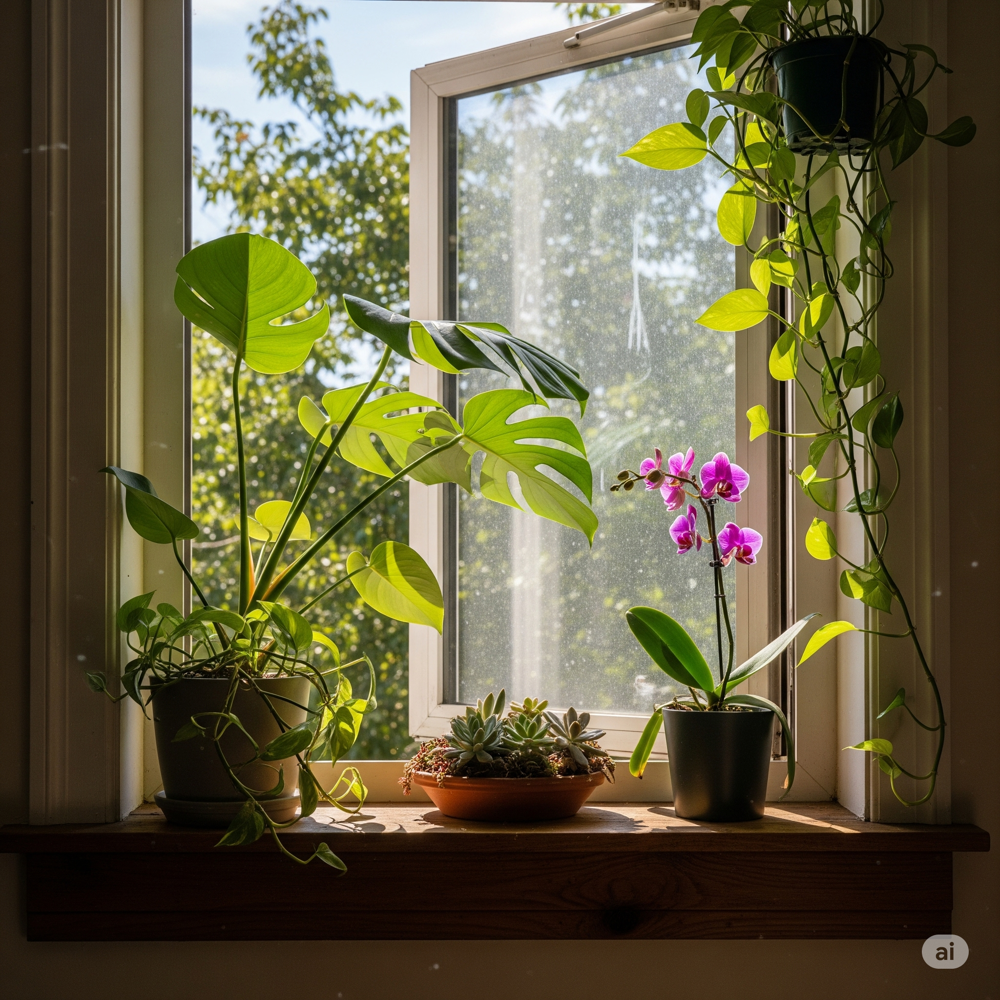
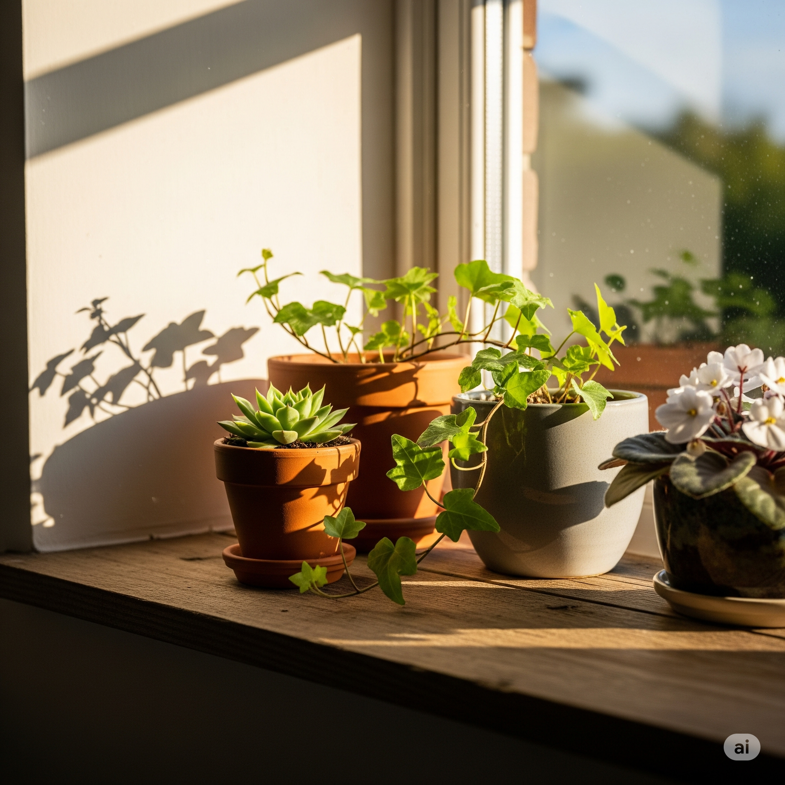
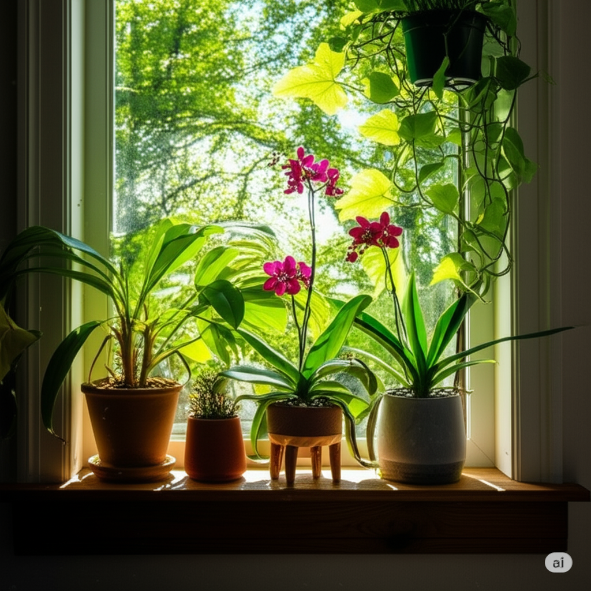

A Plantnoon'S LOG
AI 집사, 반려식물 관리의 모든것.
나만의 식물 맞춤 진단부터 성장 관리까지, 이제 '오후의 식물'과 함께 스마트하게 관리하세요.
당신의 똑똑한 식물 생활 파트너
💬
AI 식물 상담소
식물 이름부터 아픈 증상까지, 사진 한 장으로 AI가 진단하고 해결책을 알려드려요.
🪴
나만의 식물 관리
내 식물을 등록하고 물주기, 분갈이 등 성장 일지를 기록하며 체계적으로 관리하세요.
🌱
함께 나누는 초록 이야기
다른 식집사들과 관리 팁을 공유하고, 식물에 대한 궁금증을 커뮤니티에서 해결하세요.
영상으로 만나는 식물 노하우
초보 식집사를 위한 꿀팁부터 전문적인` 관리 노하우까지,
유튜브에서 더 많은 이야기를 만나보세요.

햇빛! 우리집 식물 명당 찾는 꿀팁!
햇빛은 식물에게 보약이자 독약이 될 수 있어요! ☀️ 우리 집 방향별로 식물에게 딱 맞는 햇빛 명당을 찾아주는 초보 가이드 영상입니다.

식물이 보내는 '햇빛 부족' SOS 신호 3가지, 방치하면 큰일나요!
식물이 햇빛이 부족할 때 보내는 결정적인 신호 3가지와 해결책을 자세히 알려드릴게요.

과습? 물부족? 헷갈리는 식물 물주기, 30초 완전 정복
물을 너무 많이 줘도, 너무 적게 줘도 신호를 보내는 식물! 헷갈리는 식물 물 주기, 이 영상 하나로 30초 만에 완전 정복하세요.
혹시, 알고 계셨나요?
아름다운 식물 중 일부는 자녀나 반려동물에게 독성이 있을 수 있습니다.
궁금한 식물의 이름을 검색하여 안전성을 확인해 보세요.
검사 결과가 여기에 표시됩니다.
이미 많은 식집사들이
함께하고 있어요
"오후의 식물"과 함께 달라진 반려식물 생활을 만나보세요.
"맨날 물주기 깜빡해서 식물을 떠나보냈는데, 이제는 웹에서 확인할 수 있어서 너무 편해요! 저희 집 몬스테라가 처음으로 새 잎을 보여줬어요. 🌿"
해피트리
Pro 플랜 이용자"AI 진단 기능 정말 신기해요. 잎이 말라서 사진 찍어 올렸더니 과습 문제랑 해결책을 바로 알려주더라고요. 식물 병원이 따로 없네요. 👍"
식물초보
Free 플랜 이용자"커뮤니티에서 분갈이 꿀팁 많이 얻었어요. 저처럼 식물 키우는 사람들이랑 소통하니까 더 재밌고 애정이 생기는 것 같아요. 완전 추천!"
알로카시아맘
Pro 플랜 이용자